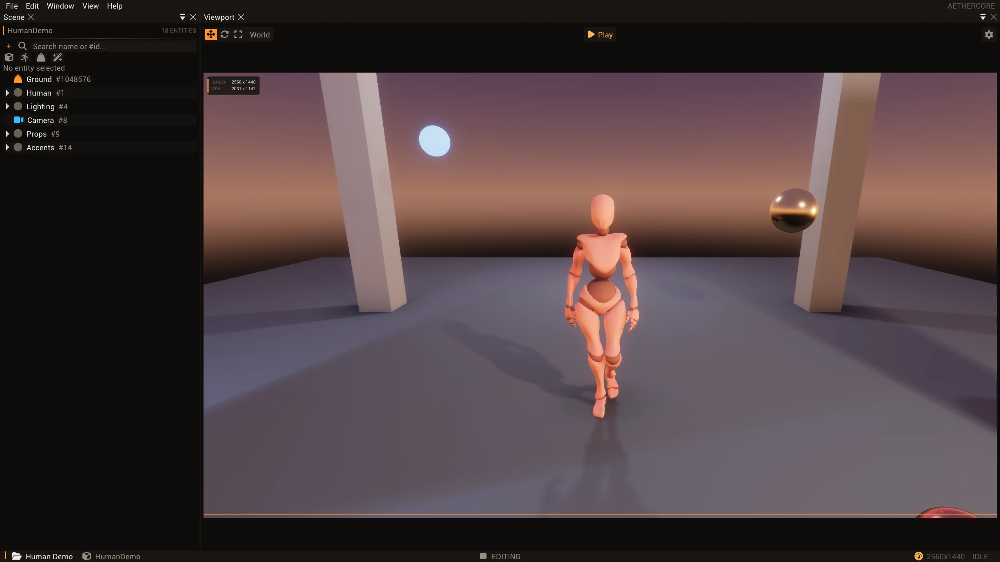

From the scene to the screen.
A frame is not the world. It is a handoff: the producer extracts the renderable consequences of a changing scene, and the render thread consumes that frame without traversing the live ECS.
A boundary around mutable state
Gameplay updates entities, components and scene settings on the producer thread. Rendering can overlap subsequent work, so letting it traverse that same mutable registry would make a draw depend on concurrent changes. AetherCore instead calls PrepareFrame on the producer and passes a RenderFramePacket to ExecuteRenderFrame. The latter takes a const packet, not a world argument; its render-side consumers use extracted data and prepared slot queues rather than querying the live ECS.
This is an extract-and-consume design, not a retained render proxy kept in sync by a stream of changes. It makes the handoff explicit, at the cost of building snapshots and draw lists for each frame. The architecture note describes that tradeoff and separately identifies structural world changes as a different synchronization problem.
One frame, four stages
Consider a frame containing a mesh, a camera and a point light. After simulation and the client update, the producer selects a draw slot, flushes the world’s mesh draws into its queue, prepares shadow and render-target queues, and copies the camera matrices and light list into the packet. The packet carries both the frame number and the slot that identifies the corresponding prepared queues.

- Update: The producer advances the game and selects a reusable draw slot.
- Extract: World data becomes packet fields and slot-specific draw queues.
- Transfer: The packet moves through the render thread’s bounded channel.
- Consume: The render thread builds lighting, executes the graph and submits the frame.
The packet and its matching per-slot queues form the frame handoff; GPU completion is a separate concern.
On the other side, ExecuteRenderFrame starts the frame, gives the 2D and debug renderers packet data, and calls EndFrame. That function checks the slot against the frame index, builds shadow and lighting data, executes the render graph and submits. See extraction and consumption.
What actually crosses the boundary
The packet owns its dynamic arrays: point and spot lights, debug vertices and physics-debug instances, alongside 2D, 3D and custom-pass frame data. Camera transforms, render and UI extents, scene settings and frame identity travel as values. Script-submitted custom passes are moved into the packet; light lists are copied. Physics shapes are extracted on the producer, so the debug pass need not walk colliders in the world.
Not every draw is embedded in that object. WorldRenderer::Flush fills the selected RenderQueue, while shadow and render-target services prepare their own queues for the same slot. A draw command includes a model matrix and material index, but also references to a mesh and pipeline. The packet also carries material and effect buffer device addresses. These are references to resources, not copies of the resources themselves: the handoff still depends on those resources remaining valid for their consumers. See the packet definition and draw command.
A slot is a lifetime agreement
The producer waits for an earlier frame to complete before selecting and clearing a slot; the configured frames-in-flight limit is clamped to the available slot count. The slot cycles by frame index modulo the maximum, and EndFrame asserts that the packet’s index and slot agree. This bounds run-ahead and prevents the producer from overwriting a queue while the render thread still needs its prior contents.
The packet is moved into a channel sized to the swapchain’s maximum frames in flight. After reading it, the render thread executes the frame, recycles overlay data and publishes the completed frame index. A reload can instead discard the packet’s pending queues; a render exception discards pending queues and closes the channel. These paths matter because a frame’s side queues have a lifetime beyond the packet’s scalar fields. Channel and completion · consumer and discard paths.
CPU completion is not GPU completion
A subtle distinction appears in scene UI. Resolving canvases walks the ECS, so UiRenderer::BuildFrame runs on the producer, before packet submission. But it also fills GPU-visible memory. The producer’s throttle waits for render-thread frame completion, not for the GPU to finish reading that memory. UI therefore rotates multiple command buffers per slot to avoid rebuilding into memory still in use.
Most other per-slot GPU writes happen on the render thread after BeginFrame waits on the slot’s swapchain fence. Moving all UI work to the render thread would simplify where the upload happens, but would put its ECS traversal back across the ownership boundary. The chosen split retains that boundary and requires its own buffer-lifetime scheme. Read the implementation commentary.
What the packet does not solve
What the handoff buys
A particular frame’s camera, lights, debug data and prepared draws have an explicit owner and handoff. The renderer does not ask a changing world what to draw.
What it still costs
Extracting data and maintaining several in-flight slots takes work. Resource replacement, viewport changes and GPU completion still need coordinated lifetimes.
A snapshot is not a general-purpose world lock or a deep copy of GPU assets. The frame loop drains and enters an exclusive operation before recreating swapchain resources or retiring affected UI viewports. A retained proxy could update deltas instead, but would introduce its own synchronization and lifetime machinery.